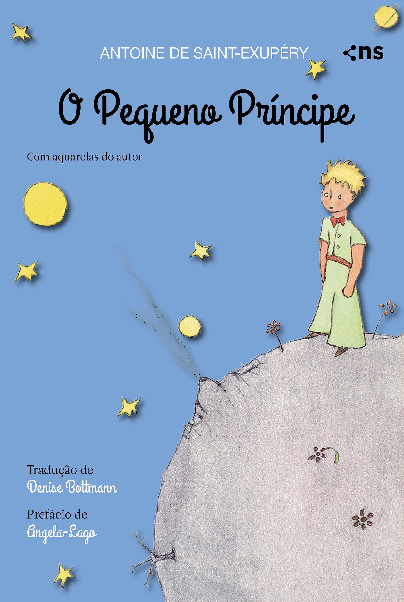
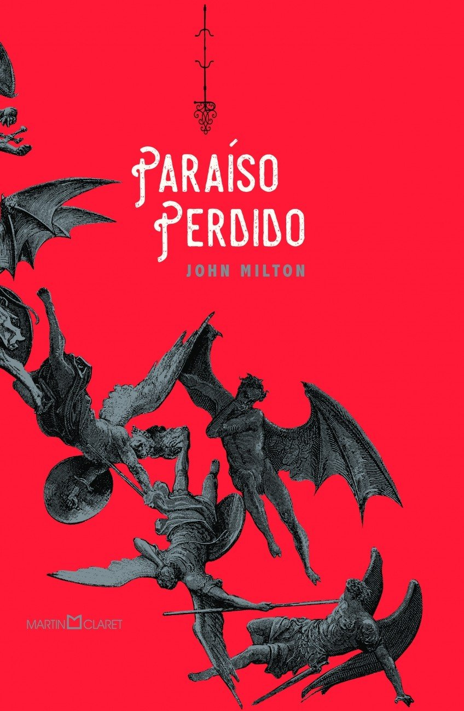
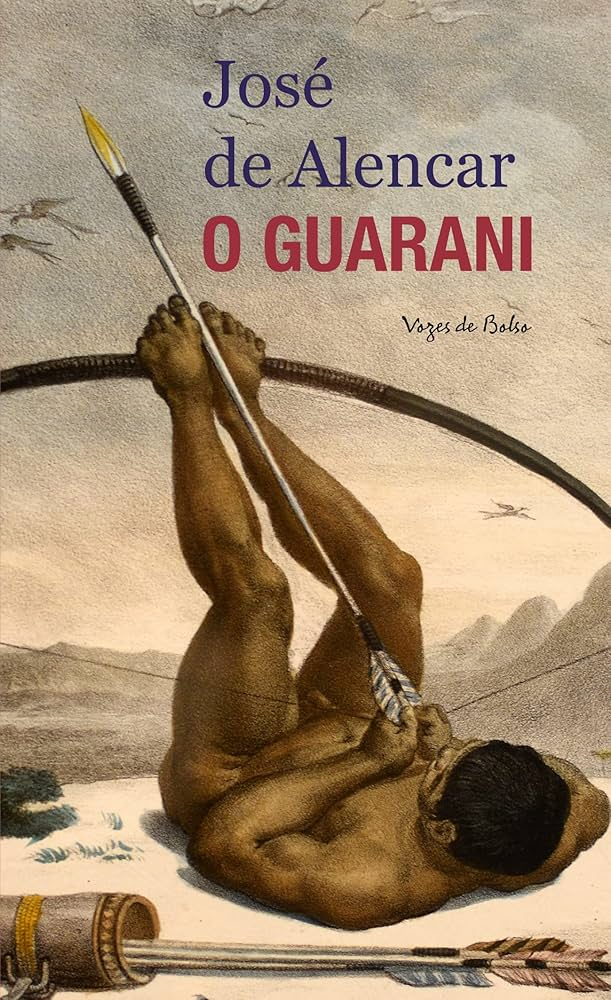
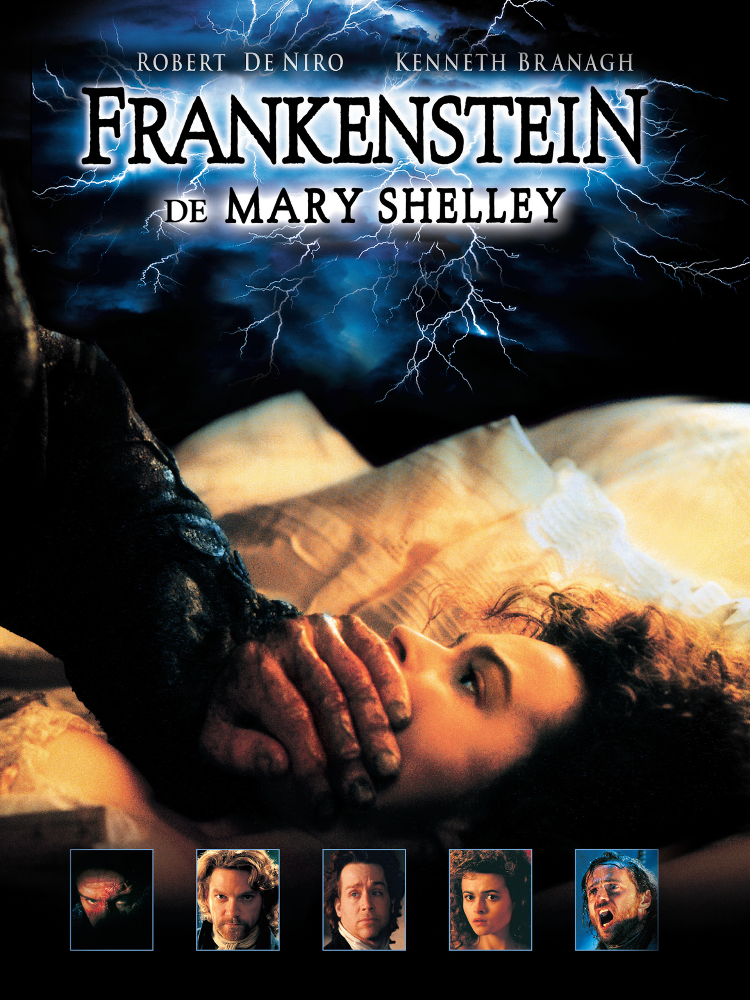
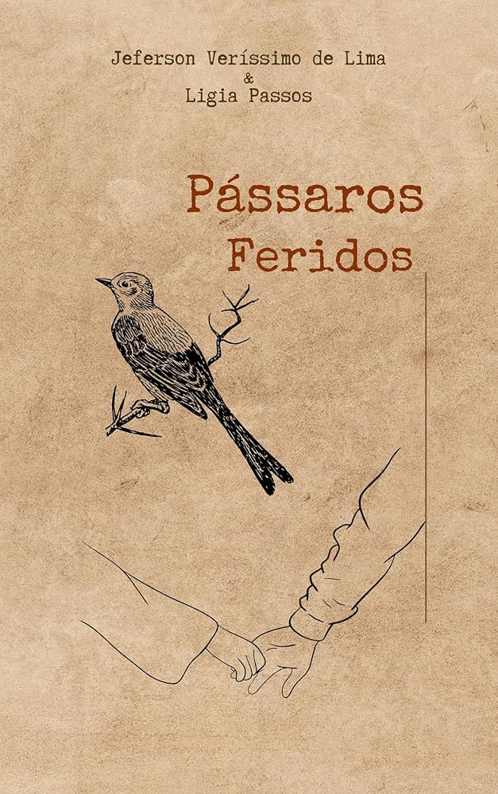

FreeBooks: o seu site de livros totalmente gratuitos!!
confira agora os principais livros disponíveis:
| Percy Jakson Rick Riordan |
 |
Menino do pijama listrado Jhon Boyne |
Pelas Entranhas Triz Parizotto |
 |
Dom Quixote Miguel de Cervantes |
|---|
 |
A sutíl arte de lirgar o foda-se Mark Manson |
 | Pequeno Príncipe Antonie de Saint |
 |
Metamorfose
Franz Kafka |
 | Paraíso Perdido
Jhon Milton |
|---|
| O estrangeiro
Jacques Ferrandez |
 |
Drácula
Bram Stroker |
 |
As Crônicas de Nárnia
C. S. Lewis |
A culpa é das Estrelas
Jhon Green |
|---|
| Kindred Octavia E. Butler |
 |
O Nome do Vento Patrick Rotbfuss |
 |
Ao Faról Virginia Woolf |
O Som e a Fúria Willian Faulkner |
|---|
 |
Meridiano de Sangue Cormac mcCarthy |
 |
O Velho e o Mar Ernest Hemingway |
 |
Capitões de Areia Jorge Amado |
 |
O Cortiço Aluísio Azevedo |
|---|
|  | O Guarani José de Alencar |
 |
Ruído Branco Don deLilo |
 |
O Hobbit J.R.R. Tolkien |
 |
Duna Frank Hebert |
|---|
| A Sangue Frio Truman Capote |
 |
Lolita Vladimir Nabokov |
 |
Os Miseráveis Victor Hugo |
 |
O Chamado Selvagem Jack London |
|---|
|  | frankstein Mary Shelley |
Laranja Mecânica Antony Burguess |
 |
Agua para Elefantes Sara Gruen |
 | Pássaros Feridos Jeferson Veríssimo de Lima |
|---|